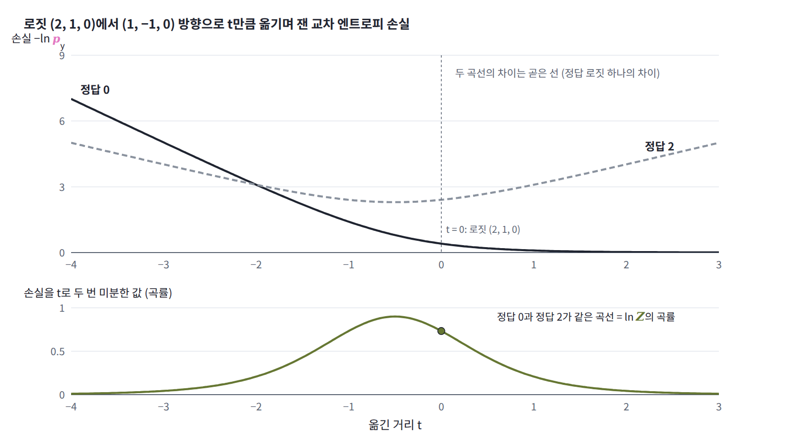
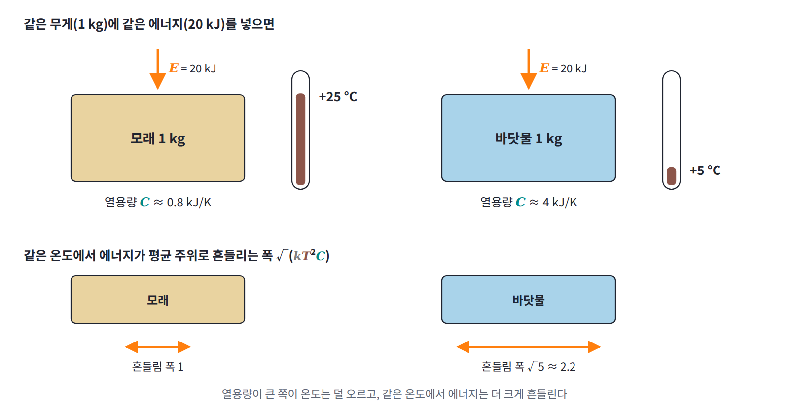
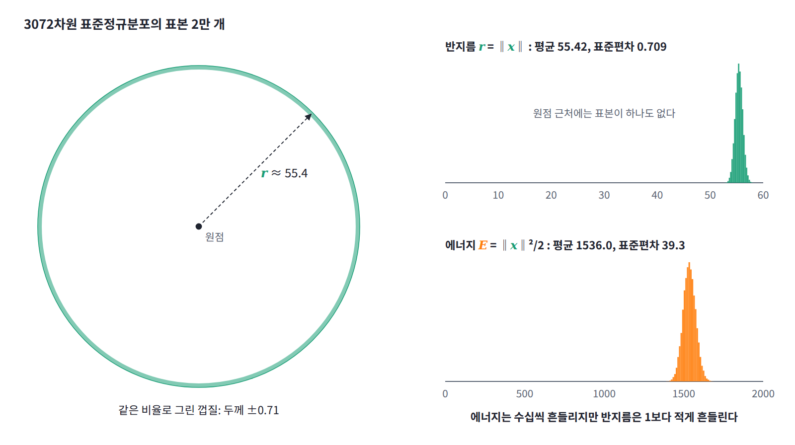
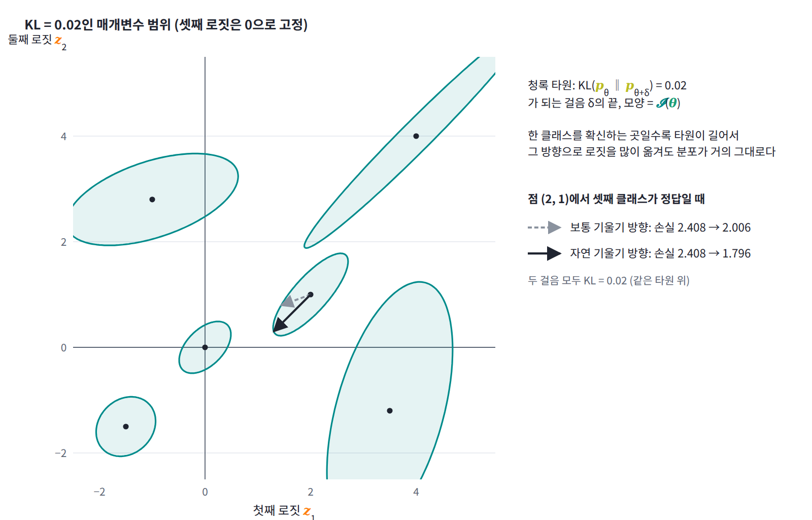
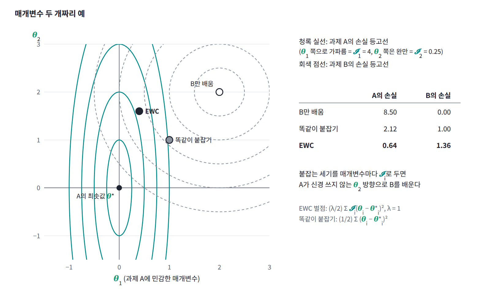

9장 — 요동과 응답
이 장에서 배우는 것
softmax 분류기의 교차 엔트로피 손실을 로짓으로 두 번 미분해 본 적이 있는가? 해 보면 조금 이상한 결과가 나온다. 정답이 0번 클래스일 때와 2번 클래스일 때 손실의 값과 기울기는 다른데, 헤시안은 소수점 끝자리까지 똑같다. 곡률이 정답 라벨과 상관없이 모델이 내놓은 확률만으로 정해지는 것이다. 연속 학습에서 옛 과제를 잊지 않도록 매개변수를 붙잡아 두는 EWC(elastic weight consolidation)도 비슷한 이야기를 한다. 이 방법은 Fisher 정보 행렬로 매개변수의 중요도를 재는데, 논문은 이 행렬이 최솟값 근처에서 손실의 2차 미분과 같으면서도 1차 미분만으로 계산할 수 있다고 적는다. 곡률을 재는 데 왜 1차 미분이면 충분할까?

답을 먼저 말하면, 볼츠만 분포에서 로그 분배함수 ln Z를 두 번 미분하면 어떤 양이 평균 주위로 얼마나 흔들리는지, 곧 분산이 나온다. 그리고 같은 분산이 온도 같은 조건을 조금 바꿨을 때 평균이 얼마나 움직이는지도 정한다. 물리에서는 이것이 「온도를 올릴 때 평균 에너지가 늘어나는 정도(열용량)는 에너지 분산을 kT²으로 나눈 것」이라는 요동-응답 관계로 나타나고, 통계와 ML에서는 「Fisher 정보는 로그우도 기울기의 분산이면서 로그우도의 곡률」이라는 사실로 나타난다. 곡률이라는 응답을 1차 미분의 흔들림으로 잴 수 있는 이유가 여기에 있다.
이 장은 두 상태만 가질 수 있는 입자 여러 개의 에너지가 평균 주위로 얼마나 흔들리는지 직접 세어 보는 작은 문제에서 출발한다. 온도를 조금 올렸을 때 평균 에너지가 늘어나는 양이 그 흔들림의 크기와 정확히 맞아떨어진다는 패턴을 찾고, ln Z의 2차 미분이 에너지 분산이라는 것으로 그 이유를 밝힌다. 이어 열용량과 요동-응답 관계를 정의하고, 온도 대신 모델의 매개변수를 바꾸는 변수로 삼아 같은 계산을 되풀이해 Fisher 정보에 이른다. 이 장을 마치면 교차 엔트로피의 헤시안이 왜 정답과 상관없는지, softmax의 헤시안이 왜 역행렬을 갖지 않는지, 데이터 라벨로 구한 기울기 제곱이 왜 Fisher 정보가 아닌지, 고차원 가우시안 샘플의 껍질이 차원과 상관없이 왜 같은 두께인지, 그리고 자연 기울기와 EWC가 곡률을 무엇으로 재는지를 설명할 수 있게 된다.
역사: 흔들림에서 읽어 낸 것
평균만 보던 통계역학이 흔들림에 눈을 돌린 것은 20세기 초의 일이다. 흔들림은 처음에 평균 이론이 맞는지 확인하는 부산물로 계산되었지만, 곧 평균으로는 보이지 않는 것을 드러내는 도구가 되었다. 비슷한 시기에 통계학에서는 로그우도의 곡률로 추정의 정밀도를 재는 생각이 자랐고, 두 흐름은 한참 뒤 ML에서 만난다.
| 연도 | 사람 | 내용 |
|---|---|---|
| 1902 | 깁스 | 『통계역학의 기본 원리』 7장에서 정준 앙상블의 에너지가 평균에서 벗어나는 정도를 평균 에너지의 온도 미분으로 적음 |
| 1904 | 아인슈타인 | 「열의 일반 분자 이론에 관하여」에서 같은 식을 독립적으로 얻고 흑체 복사에 어림으로 적용 |
| 1909 | 아인슈타인 | 플랑크의 복사 법칙에 흔들림 공식을 적용해 파동으로 설명되는 항과 입자로 설명되는 항을 얻음 |
| 1925 | 피셔 | 「통계적 추정의 이론」에서 로그우도 기울기의 분산과 곡률의 평균이 같다는 것을 쓰고, 이 양으로 표본이 담은 정보를 잼 |
| 1945 | 라오 | 추정량 분산의 하한을 Fisher 정보의 역수로 주고, Fisher 정보로 분포들 사이의 거리를 잼 |
| 1998 | 아마리 | 자연 기울기. Fisher 정보로 나눈 기울기가 분포 공간에서 가장 가파른 방향임을 보임 |
| 2017 | 커크패트릭 외 | EWC. Fisher 정보로 매개변수의 중요도를 재어 연속 학습의 망각을 줄임 |
1904년 베른 특허청의 심사관이던 아인슈타인은 『물리학 연보』에 낸 논문에서, 열원과 에너지를 주고받는 계의 에너지 흔들림을 제곱해 평균한 값이 kT² × (평균 에너지의 온도 미분)과 같다는 식을 얻었다. 깁스가 2년 전 같은 식을 이미 적어 두었지만 아인슈타인은 그것을 모른 채 따로 도달했다. 그는 이 식에 들어 있는 보편 상수 k가 에너지 흔들림의 크기를 정한다는 점에 주목했고, 흑체 복사에 이 식을 과감하게 적용했다. 한 변이 파장 정도인 공간에서는 복사 에너지의 흔들림이 에너지 자체만큼 크리라고 가정하고 계산하니, 온도에 따라 가장 밝게 나오는 빛의 파장이 옮겨 가는 빈의 변위 법칙과 거의 맞는 값이 나왔다.
5년 뒤 아인슈타인은 같은 발상을 더 밀고 나갔다. 이번에는 실험과 잘 맞는 플랑크의 복사 법칙을 흔들림 공식에 넣었는데, 에너지 흔들림이 두 항의 합으로 나왔다. 한 항은 빛을 파동으로 보고 여러 파동이 간섭해 생기는 흔들림으로 설명할 수 있었고, 다른 항은 빛이 에너지 덩어리로 공간에 흩어져 있다고 보아야만 설명할 수 있었다. 1909년 9월 잘츠부르크에서 열린 학회에서 그는 이 결과를 발표하며 빛에는 파동의 성질과 입자의 성질이 함께 있다는 생각을 제안했다. 평균 에너지만 보았다면 보이지 않았을 빛의 입자성이 흔들림에서 드러난 것이다.
통계학 쪽에서는 피셔가 1922년 논문에서 최대우도 추정의 정밀도가 로그우도 곡선의 뾰족한 정도로 정해진다는 것을 보였고, 1925년 논문 「통계적 추정의 이론」에서는 로그우도를 매개변수로 미분한 기울기의 분산이 로그우도 곡률의 평균과 같다는 것을 이용해 이 양을 표본이 담은 정보의 양으로 해석했다. 오늘날 Fisher 정보라 부르는 양이다. 1945년 인도의 스물네 살 통계학자 라오는 어떤 불편 추정량도 분산이 Fisher 정보의 역수보다 작을 수 없다는 부등식을 보였고, 같은 논문에서 Fisher 정보를 분포들 사이의 거리를 재는 계량으로 쓰자고 제안했다. 이 거리가 반세기 뒤 아마리의 자연 기울기로 이어진다.
작은 문제: 에너지는 얼마나 흔들리는가
에너지 0인 바닥 상태와 에너지 ε인 들뜬 상태만 가질 수 있는 입자 N개가 온도 T인 열원과 맞닿아 있고, 입자끼리는 에너지를 주고받지 않는다고 하자. 들뜬 상태의 볼츠만 인자 e^(−βε)가 1/2이 되는 온도, 곧 βε = ln 2를 고르면 입자 하나가 들떠 있을 확률은 1/(1 + 2) = 1/3이다. 계산을 간단히 하려고 ε = 1, k = 1로 두면 계의 에너지는 들뜬 입자의 수 n과 같다.
입자가 세 개이면 에너지 값마다 미시상태 수 g는 1, 3, 3, 1이고 볼츠만 인자는 1, 1/2, 1/4, 1/8이므로, 가중치를 모두 더한 Z = 3.375로 나누면 에너지 값별 확률을 얻는다.
| 에너지 n | 미시상태 수 g | 확률 | n × 확률 | n² × 확률 |
|---|---|---|---|---|
| 0 | 1 | 0.296 | 0 | 0 |
| 1 | 3 | 0.444 | 0.444 | 0.444 |
| 2 | 3 | 0.222 | 0.444 | 0.889 |
| 3 | 1 | 0.037 | 0.111 | 0.333 |
| 합 | 8 | 1 | 1.000 | 1.667 |
평균 에너지는 1이고, 에너지 제곱의 평균은 1.667이다. 에너지가 평균 주위로 흔들리는 정도는 분산, 곧 제곱의 평균에서 평균의 제곱을 뺀 1.667 − 1 = 0.667로 잰다. 에너지의 표준편차는 그 제곱근인 0.816이니, 입자 세 개짜리 계의 에너지는 평균 1 주위로 거의 1만큼씩 흔들린다.
이번에는 흔들림과 전혀 다른 질문을 해 보자. 열원의 온도를 조금 올리면 평균 에너지는 얼마나 늘어날까? 역온도를 βε = ln 2 = 0.6931에서 0.6831로 0.01만큼 낮추면 온도는 약 1.5% 올라가고, 같은 표를 다시 계산하면 평균 에너지는 1.00668이 된다. 늘어난 양 0.00668을 역온도의 변화 0.01로 나누면 0.668이다. 방금 구한 분산 0.667과 거의 같다.
우연일 수도 있으니 입자 수를 바꿔 가며 같은 두 계산을 해 보자. 셋째 열은 에너지 값별 확률로 직접 계산한 분산이고, 마지막 열은 역온도를 0.01 낮출 때 평균 에너지가 늘어난 양을 0.01로 나눈 값이다.
| N | 평균 에너지 | 분산 | 표준편차 | 표준편차 / 평균 | 평균 에너지의 증가 ÷ 0.01 |
|---|---|---|---|---|---|
| 3 | 1 | 0.667 | 0.816 | 0.816 | 0.668 |
| 30 | 10 | 6.667 | 2.582 | 0.258 | 6.678 |
| 300 | 100 | 66.67 | 8.165 | 0.082 | 66.78 |
| 3000 | 1000 | 666.7 | 25.82 | 0.026 | 667.8 |
두 가지가 눈에 띈다. 첫째, 어느 입자 수에서나 마지막 열은 분산과 0.2% 안에서 맞는다. 에너지가 저절로 흔들리는 정도와, 온도를 바꿨을 때 평균 에너지가 따라 움직이는 정도는 서로 다른 질문인데 같은 숫자로 답해진다. 둘째, 분산은 입자 수에 비례해 커지지만 평균도 입자 수에 비례하므로, 표준편차를 평균으로 나눈 상대적인 흔들림은 입자가 백 배 늘 때마다 10분의 1로 줄어든다. 흔들림과 응답은 왜 같은 숫자일까? 그리고 이 숫자는 분배함수 Z 어디에 적혀 있을까?
패턴: ln Z를 두 번 미분하면 분산이 나온다
로그 분배함수를 역온도로 한 번 미분하면 평균 에너지에 마이너스가 붙어 나온다. Z = Σᵢe^(−βEᵢ)를 β로 미분하면 각 항에서 −Eᵢ가 내려오고, 이것을 Z로 나누면 볼츠만 확률로 평균한 −⟨E⟩가 되기 때문이다. 이 결과를 한 번 더 β로 미분해 보자. ⟨E⟩ = ΣᵢEᵢe^(−βEᵢ)/Z는 분자와 분모에 모두 β가 들어 있는 분수이므로 몫의 미분법을 쓴다. 분자를 미분하면 각 항에서 −Eᵢ가 한 번 더 내려와 −⟨E²⟩가 되고, 분모를 미분한 몫은 ⟨E⟩ × ⟨E⟩가 되어 다음을 얻는다.
가운데 항이 작은 문제의 마지막 열이고, 오른쪽 항이 셋째 열이다. 역온도를 조금 바꿨을 때 평균 에너지가 움직이는 비율과 에너지의 분산은 ln Z의 같은 2차 미분을 두 가지로 읽은 것이므로, 입자 수와 상관없이 정확히 같다. 표에서 0.2%쯤 어긋난 것은 역온도를 0.01이라는 유한한 폭으로 바꿔 기울기를 어림했기 때문이다.

이 식에서 곧바로 두 가지를 읽을 수 있다. 첫째, 분산은 음수가 될 수 없으므로 ln Z는 β의 볼록 함수이고, 평균 에너지는 β가 커질수록, 곧 온도가 내려갈수록 줄어든다. 온도를 올렸는데 평균 에너지가 줄어드는 계는 평형에서 있을 수 없다는 뜻이다. ln Z와 엔트로피를 르장드르 변환으로 오갈 수 있는 것도 ln Z가 볼록하기 때문인데, 그 볼록성의 정체가 에너지의 흔들림이었던 셈이다. 둘째, 에너지 분산이 0이 되는 것은 모든 상태가 같은 에너지를 가질 때뿐이고, 그때는 ln Z가 β에 대해 곧은 선이 되어 온도를 바꿔도 평균 에너지가 전혀 움직이지 않는다. 흔들리지 않는 양은 조건을 바꿔도 반응하지 않는다.
한 번 더 미분하면 어떻게 될까? 같은 계산을 되풀이하면 −∂³ln Z/∂β³은 ⟨(E − ⟨E⟩)³⟩, 곧 에너지 분포가 한쪽으로 기운 정도가 된다. 이렇게 미분할 때마다 평균, 분산, 비대칭도가 차례로 나오는 함수를 확률론에서는 누율 생성 함수라 부르는데, −β를 변수로 보면 ln Z가 상수 하나의 차이를 빼고 바로 에너지의 누율 생성 함수다. ML 독자에게 익숙한 말로 하면, ln Z의 1차 미분은 모델의 평균을, 2차 미분은 모델의 공분산을 내준다.
이 패턴은 ln Z와 가장 큰 항의 차이도 설명한다. 2준위 입자 N개에서 에너지 값마다 가중치 g·e^(−βE)의 로그, 곧 점수 ln g − βE를 매기고 그 가운데 가장 큰 점수를 ln Z와 비교하면, 입자 수가 클 때 그 차이는 ½ ln(2π × 분산)에 다가간다. N = 3000이면 분산이 666.7이므로 ½ ln(2π × 666.7) = 4.170이고, 이것은 ln Z = 1216.395와 가장 큰 항의 점수 1212.225의 차이와 소수 셋째 자리까지 같다. 가장 큰 항 근처에서 함께 더해지는 항들이 이루는 봉우리의 폭이 바로 에너지의 표준편차 √666.7 = 25.8이었던 것이다.
정의: 열용량과 요동-응답 관계
여름 한낮의 해변에서는 모래가 맨발로 딛기 어려울 만큼 뜨거운데 바닷물은 미지근하다. 같은 햇볕을 받는데도 물의 온도가 덜 오르는 것은, 같은 무게의 모래보다 온도를 1도 올리는 데 에너지가 네다섯 배쯤 더 들기 때문이다. 온도를 올릴 때 에너지가 얼마나 들어가는지를 재는 이 양을 물리에서는 열용량이라 부른다.
이 장의 이름에 들어간 두 낱말을 먼저 정해 두자. 평형에 있는 계에서 어떤 양이 평균 주위로 저절로 흔들리는 것을 요동 (평균 주위의 흔들림, fluctuation)이라 하고, 그 크기는 분산으로 잰다. 그리고 계에 걸린 조건을 조금 바꿨을 때 그 양의 평균이 따라 움직이는 비율을 응답 (조건의 변화에 대한 평균의 민감도, response)이라 한다. 바꾸는 조건이 온도이고 지켜보는 양이 에너지의 평균일 때 그 응답이 열용량 (온도에 대한 평균 에너지의 응답, heat capacity)이고 C로 쓴다. 역온도와 온도는 β = 1/kT로 이어져 있어서 dβ/dT = −1/(kT²)이므로, 앞 절의 결과에 이 비율을 곱하면 다음을 얻는다.
첫 식을 요동-응답 관계 (흔들림의 크기가 응답을 정한다, fluctuation-response relation)라 부른다. 왼쪽은 온도를 바꾸는 실험을 해야 알 수 있는 양이고, 오른쪽은 온도를 고정한 채 에너지가 흔들리는 모습만 지켜보면 알 수 있는 양이다. 계가 조건의 변화에 반응할 수 있는 길과 저절로 흔들리는 길이 같은 길이라서 둘이 같아진다. 둘째 식은 에너지의 변화가 dE = T dS로 엔트로피의 변화와 이어져 있다는 데서 나오며, 열용량이 엔트로피가 온도의 로그에 반응하는 정도, 곧 ∂S/∂ln T이기도 하다는 것을 말해 준다.
작은 문제의 계에 적용해 보자. βε = ln 2에서 입자 하나의 에너지 분산은 (1/3)(2/3)ε² = 0.222ε²이고 kT = ε/ln 2이므로, 입자 하나의 열용량은 0.222 × (ln 2)²k = 0.107k다. 표준정규분포를 에너지 E = ‖x‖²/2, 온도 1인 볼츠만 분포로 보면 제곱 항 하나가 평균 에너지 ½kT를 받으므로 C = (d/2)k이고, 요동-응답 관계에 따라 에너지 분산은 kT²C = d/2다. 3072차원이면 에너지의 표준편차가 √1536 = 39.2이니, 샘플의 에너지가 1536 근처에서 수십씩 흔들리는 것은 이 계의 열용량이 크다는 것과 같은 이야기다.
요동-응답 관계는 상대적인 흔들림이 왜 작은지도 설명한다. 열용량과 평균 에너지는 모두 계의 크기 N에 비례하므로 에너지의 표준편차 √(kT²C)는 √N에 비례하고, 표준편차를 평균으로 나눈 값은 1/√N으로 줄어든다. 작은 문제의 표에서 입자가 백 배 늘 때마다 상대적인 흔들림이 10분의 1이 된 이유다. 입자가 10²³개쯤 되는 일상의 물체에서는 이 비율이 10⁻¹² 정도라서, 온도를 정하면 에너지도 사실상 하나의 값으로 정해진다. 열역학이 평균만으로 이야기해도 되는 근거가 여기 있다. 반대로 같은 온도에서 열용량이 큰 물체일수록 에너지의 절대적인 흔들림은 크다. 한낮의 바닷물은 모래보다 온도가 덜 오르는 대신 에너지가 더 크게 흔들리고 있는 셈이다.

일반화: 여러 매개변수와 Fisher 정보
물리의 실험실에서 바꿀 수 있는 조건은 주로 온도지만, ML에서 바꾸는 것은 모델의 매개변수다. 온도를 1로 두고 에너지 함수 E_θ(x)에 매개변수 θ = (θ₁, θ₂, …)가 들어 있는 볼츠만 분포 p_θ(x) = e^(−E_θ(x))/Z(θ)를 생각하자. ln Z를 θₐ로 한 번 미분하면 각 항에서 −∂E/∂θₐ가 내려오므로 ∂ln Z/∂θₐ = −⟨∂E/∂θₐ⟩이다. 에너지 기반 모델을 학습할 때 기울기에 나타나는 모델 쪽 평균이 바로 이것이다. 이것을 θ_b로 한 번 더 미분하면, 역온도로 두 번 미분할 때와 같은 몫의 미분법으로 다음을 얻는다.
에너지가 매개변수의 일차식, 곧 E_θ(x) = −Σₐθₐφₐ(x)처럼 매개변수가 어떤 특징 φₐ(x)의 계수로만 들어 있으면 마지막 항이 0이 되고, ln Z의 헤시안은 특징들의 공분산 행렬과 같아진다. softmax의 로짓이 바로 이런 매개변수다. 이때 한 번 미분한 결과가 ∂ln Z/∂θₐ = ⟨φₐ⟩이므로, 헤시안은 「θ_b를 조금 바꿨을 때 특징 φₐ의 평균이 움직이는 비율」이기도 하다. 요동-응답 관계를 여러 매개변수에 대해 한꺼번에 적은 행렬판인 셈이다. 공분산 행렬은 양의 준정부호이므로 ln Z는 매개변수에 대해서도 볼록하고, 어떤 방향 c로 특징의 조합 Σₐcₐφₐ가 전혀 흔들리지 않으면 ln Z는 그 방향으로 곧은 선이 된다.
이제 통계학의 양 하나를 정의하자. 로그우도를 매개변수로 미분한 ∂ln p_θ(x)/∂θ를 스코어 (로그우도의 매개변수 기울기, score)라 하고(확산 모델의 스코어는 매개변수가 아니라 입력 x로 미분한 것이라 다른 양이다), 모델이 스스로 뽑은 샘플에서 이 스코어의 공분산을 Fisher 정보 (분포가 매개변수에 얼마나 민감한지, Fisher information)라 한다. 글자 I는 엔트로피 계열의 상호정보량 I(X; Y)가 쓰고 있으므로 이 책에서는 필기체 𝓘로 쓴다. 볼츠만 분포에서는 ln p_θ(x) = −E_θ(x) − ln Z(θ)이므로 스코어가 −∂E/∂θ + ⟨∂E/∂θ⟩, 곧 에너지 기울기에서 평균을 뺀 것이다. 그래서 스코어의 평균은 0이고 그 공분산은 에너지 기울기의 공분산과 같다.
가운데 등호는 로그우도의 곡률을 모델 분포로 평균하면 스코어의 공분산과 같아진다는 뜻이다. 곡률은 매개변수를 움직였을 때 로그우도가 어떻게 휘는지 묻는 응답의 양이고, 스코어의 공분산은 샘플마다 기울기가 흔들리는 요동의 양이므로, 이것도 요동-응답 관계의 한 모습이다. 에너지가 매개변수의 일차식이면 셋은 모두 ∂²ln Z/∂θₐ∂θ_b와 같다. 이 장의 첫 질문, 곧 곡률을 1차 미분만으로 잴 수 있는 이유가 이것이다. 곡률 자체는 2차 미분이지만, 그 값이 1차 미분의 흔들림과 같으니 기울기를 여러 번 뽑아 공분산을 내면 된다. 다만 그 흔들림은 모델이 스스로 뽑은 샘플에서 재야 한다.
온도도 매개변수의 하나로 볼 수 있다. 에너지 βE는 역온도 β의 일차식이므로 β에 대한 Fisher 정보는 에너지의 분산 Var(E)이고, 요동-응답 관계로 옮기면 kT²C다. 에너지 샘플을 보고 온도를 알아맞히는 일이 얼마나 쉬운지를 열용량이 정한다는 뜻인데, 이것이 무엇을 뜻하는지는 대화 연습의 마지막 문제에서 계산한다.
flowchart LR A["ln Z<br/>로그 분배함수"] -->|"한 번 미분"| B["평균<br/>⟨E⟩, ⟨φ⟩"] B -->|"한 번 더 미분"| C["분산·공분산<br/>요동"] C --- D["응답<br/>열용량 C, ∂⟨φ⟩/∂θ"] C --- E["곡률<br/>Fisher 정보 𝓘, 손실의 헤시안"] C --- F["잴 수 있는 정도<br/>에너지 샘플로 온도 알아맞히기"]
보기: 코드
ln Z의 2차 미분과 에너지의 흔들림
작은 문제의 표를 자동 미분으로 다시 만들어 보자. 2준위 입자 N개의 ln Z = N ln(1 + e^(−β))를 PyTorch로 β에 대해 두 번 미분하고, 에너지 값별 가중치로 직접 센 분산과 나란히 놓는다. 마지막 열은 요동-응답 관계로 구한 열용량이다. 뒤쪽에서는 3072차원 표준정규분포에서 샘플 2만 개를 뽑아 에너지와 반지름이 얼마나 흔들리는지 잰다.
import torch
from math import lgamma, log, sqrt, exp
def lnZ(beta, N): # 2준위 입자 N개 (ε = 1, k = 1): Z = (1 + e^(−β))^N
return N * torch.log(1 + torch.exp(-beta))
def counted_var(N, b): # 에너지 값별 가중치 g·e^(−βE)로 직접 센 분산
lw = [lgamma(N + 1) - lgamma(n + 1) - lgamma(N - n + 1) - b * n for n in range(N + 1)]
w = [exp(v - max(lw)) for v in lw]
s = sum(w)
mean = sum(n * wn for n, wn in enumerate(w)) / s
return sum(n * n * wn for n, wn in enumerate(w)) / s - mean ** 2
b0 = log(2) # βε = ln 2
print(" N −∂lnZ/∂β ∂²lnZ/∂β² 세어서 얻은 분산 C = 분산/kT²")
for N in (3, 30, 300, 3000):
beta = torch.tensor(b0, dtype=torch.float64, requires_grad=True)
g, = torch.autograd.grad(lnZ(beta, N), beta, create_graph=True) # 1차 미분
h, = torch.autograd.grad(g, beta) # 2차 미분
print(f"{N:5d} {-g.item():10.4f} {h.item():11.4f} {counted_var(N, b0):15.4f}"
f" {h.item() * b0 ** 2:13.4f}")
# d = 3072 표준정규분포: 에너지 ‖x‖²/2의 흔들림과 반지름 ‖x‖의 흔들림
torch.manual_seed(0)
d = 3072
x = torch.randn(20000, d, dtype=torch.float64)
E, r = 0.5 * (x ** 2).sum(1), x.norm(dim=1)
print(f"E: 평균 {E.mean():.1f}, 표준편차 {E.std():.2f} (예측 √(d/2) = {sqrt(d / 2):.2f})")
print(f"r: 평균 {r.mean():.3f} (√d = {sqrt(d):.3f}), 표준편차 {r.std():.4f} (예측 1/√2 = {1 / sqrt(2):.4f})")
# N −∂lnZ/∂β ∂²lnZ/∂β² 세어서 얻은 분산 C = 분산/kT²
# 3 1.0000 0.6667 0.6667 0.3203
# 30 10.0000 6.6667 6.6667 3.2030
# 300 100.0000 66.6667 66.6667 32.0302
# 3000 1000.0000 666.6667 666.6667 320.3020
# E: 평균 1536.0, 표준편차 39.31 (예측 √(d/2) = 39.19)
# r: 평균 55.421 (√d = 55.426), 표준편차 0.7091 (예측 1/√2 = 0.7071)
1차 미분은 평균 에너지를, 2차 미분은 세어서 얻은 분산을 소수 넷째 자리까지 그대로 내준다. 경우의 수를 한 번도 세지 않고 ln Z의 곡률만으로 흔들림의 크기를 얻은 것이다. 3072차원 가우시안에서는 에너지의 표준편차가 예측값 39.19와 표본의 오차 안에서 맞고, 반지름의 표준편차는 0.709로 1/√2에 가깝다. 에너지는 수십씩 흔들리는데 반지름의 흔들림은 1보다 작은 이유는 대화 연습에서 따져 본다.

softmax의 헤시안은 원-핫의 공분산이다
이번에는 바꾸는 변수를 온도에서 로짓으로 옮긴다. 로짓 z = (2, 1, 0)에서 logsumexp, 곧 온도 1의 ln Z를 로짓으로 두 번 미분한 헤시안을 구하고, 모델이 이 확률로 라벨을 10만 번 뽑았을 때 원-핫 벡터의 표본 공분산과 비교한다. 교차 엔트로피 손실의 헤시안이 정답 라벨에 따라 달라지는지도 확인한다.
import torch
import torch.nn.functional as Fn
torch.set_printoptions(precision=4, sci_mode=False)
torch.manual_seed(0)
z = torch.tensor([2.0, 1.0, 0.0], dtype=torch.float64) # 로짓 (온도 1, E = −z)
p = torch.softmax(z, 0)
H = torch.autograd.functional.hessian(lambda v: torch.logsumexp(v, 0), z) # ln Z의 2차 미분
cov = torch.diag(p) - torch.outer(p, p) # 원-핫의 공분산 (공식)
y = torch.multinomial(p, 100000, replacement=True) # 모델에서 라벨 10만 개 뽑기
cov_sample = torch.cov(Fn.one_hot(y, 3).double().T) # 원-핫의 공분산 (표본)
def ce_hessian(label): # 교차 엔트로피의 로짓 헤시안
return torch.autograd.functional.hessian(
lambda v: Fn.cross_entropy(v[None], torch.tensor([label])), z)
print("p =", p)
print("ln Z의 헤시안\n", H)
print("모델이 뽑은 원-핫의 표본 공분산\n", cov_sample)
print("정답 0과 정답 2의 헤시안이 같은가:", torch.allclose(ce_hessian(0), ce_hessian(2)))
print("공식 diag(p) − ppᵀ와 같은가:", torch.allclose(H, cov))
ones = torch.ones(3, dtype=torch.float64)
print("고윳값:", torch.linalg.eigvalsh(H), " (1,1,1) 방향의 곡률:", f"{(ones @ H @ ones).item():.1e}")
# p = tensor([0.6652, 0.2447, 0.0900], dtype=torch.float64)
# ln Z의 헤시안
# tensor([[ 0.2227, -0.1628, -0.0599],
# [-0.1628, 0.1848, -0.0220],
# [-0.0599, -0.0220, 0.0819]], dtype=torch.float64)
# 모델이 뽑은 원-핫의 표본 공분산
# tensor([[ 0.2230, -0.1628, -0.0602],
# [-0.1628, 0.1850, -0.0222],
# [-0.0602, -0.0222, 0.0824]], dtype=torch.float64)
# 정답 0과 정답 2의 헤시안이 같은가: True
# 공식 diag(p) − ppᵀ와 같은가: True
# 고윳값: tensor([0.0000, 0.1186, 0.3709], dtype=torch.float64) (1,1,1) 방향의 곡률: 2.9e-16
ln Z의 헤시안과 모델이 뽑은 원-핫의 표본 공분산이 소수 셋째 자리로 반올림하면 같고, 교차 엔트로피의 헤시안은 정답이 0이든 2든 똑같다. 고윳값 하나가 0이고 (1, 1, 1) 방향의 곡률이 컴퓨터의 반올림 오차 크기라는 것도 눈여겨보자. 이 두 사실이 무엇을 뜻하는지는 다음 절과 대화 연습에서 다룬다.
ML에서 만나는 곳
ML에서 ln Z의 2차 미분은 손실의 곡률로, 그리고 매개변수 공간에서 분포 사이의 거리를 재는 Fisher 정보로 나타난다. 어느 쪽이든 그 값은 모델 자신이 흔들리는 정도다.
교차 엔트로피의 곡률은 모델의 흔들림이다 (움직이는 것: 로짓)
softmax 분류기를 온도 1의 볼츠만 분포로 읽으면 에너지는 Eᵢ = −zᵢ이고 ln Z = logsumexp(z)이다. 정답이 y일 때 교차 엔트로피 손실은 −ln p_y = −z_y + ln Z인데, 앞의 −z_y는 로짓의 일차식이라 두 번 미분하면 사라진다. 그래서 손실의 헤시안은 ln Z의 헤시안뿐이고, 로짓이 에너지의 계수로 들어가는 경우이므로 그것은 모델이 뽑은 원-핫 벡터의 공분산이다.
정답 y는 식의 어디에도 남지 않는다. 곡률은 데이터가 무엇이라고 말하는지와 상관없이, 모델이 지금 내놓은 확률로 라벨을 뽑는다면 원-핫 벡터가 얼마나 흔들릴지만으로 정해진다. 모델이 한 클래스를 확신해 p가 원-핫에 가까워지면 흔들림이 사라지고 곡률도 0으로 간다. 학습이 진행되어 확신이 커질수록 손실 곡면이 평평해지는 것은 이 때문이다. 이 행렬은 원-핫 성분을 모두 더하면 항상 1이라는 제약 때문에 (1, …, 1) 방향으로 흔들림이 없고, 그래서 그 방향의 곡률이 0이다. 출력층이 softmax인 모델에서 가우스–뉴턴 행렬과 Fisher 정보 행렬이 같아진다는, 2차 최적화 문헌에서 널리 쓰이는 사실도 여기서 나온다.
Fisher 정보와 자연 기울기 (움직이는 것: 모델 매개변수)
매개변수를 δ만큼 바꾸면 분포는 얼마나 달라질까? 에너지가 매개변수의 일차식인 볼츠만 분포에서는 KL 발산을 정확히 ln Z로 적을 수 있고, δ가 작으면 ln Z의 2차 테일러 항만 남는다. 일반적인 모델에서도 2차까지는 같은 모양이 성립한다.
첫 식은 매개변수 공간의 거리를 매개변수 좌표의 제곱합이 아니라 분포가 달라진 정도로 재면 그 계량이 Fisher 정보라는 뜻이다. 모델이 크게 흔들리는 방향의 매개변수는 조금만 움직여도 분포가 많이 바뀌고, 흔들림이 없는 방향은 아무리 움직여도 분포가 그대로다. KL의 크기를 일정하게 묶어 두고 손실을 가장 많이 줄이는 걸음을 찾으면 둘째 식, 곧 기울기에 Fisher 정보의 역행렬을 곱한 자연 기울기 (분포 공간에서 가장 가파른 방향, natural gradient)가 나온다.

아마리(1998)의 초록 첫 문장은 「매개변수 공간이 어떤 구조를 가지면 함수의 보통 기울기는 가장 가파른 방향을 나타내지 않지만 자연 기울기는 나타낸다」이다. 이 장을 마친 독자는 이 문장을 「매개변수마다 모델을 흔드는 정도가 다르므로, 그 흔들림의 공분산으로 기울기를 나눠야 분포가 실제로 가장 빨리 좋아지는 방향이 된다」로 읽게 된다. 에너지가 매개변수의 일차식이면 Fisher 정보가 음의 로그우도의 헤시안과 같으므로, 이때 자연 기울기는 뉴턴 방법과 같은 걸음이 된다. 큰 신경망에서는 이 행렬을 그대로 역행렬로 만들 수 없어서 K-FAC처럼 층별로 쪼개어 어림하는 방법들이 쓰인다.
곡률을 1차 미분으로 재는 EWC (움직이는 것: 매개변수, 옛 과제의 기억)
과제 A를 배운 신경망이 과제 B를 배우면 A를 잊는다. 커크패트릭 외(2017)의 EWC는 과제 A를 마친 매개변수 θ*에서 Fisher 정보의 대각 성분 𝓘ᵢ를 구해 두고, 과제 B를 배울 때 (λ/2)Σᵢ𝓘ᵢ(θᵢ − θ*ᵢ)²를 손실에 더한다. 과제 A의 분포를 많이 흔드는 매개변수일수록 강하게 붙잡아 두는 것이다. 논문은 이 행렬에 대해 「F는 세 가지 핵심 성질이 있다. (a) 최솟값 근처에서 손실의 2차 미분과 같고, (b) 1차 미분만으로 계산할 수 있어 큰 모델에서도 계산하기 쉬우며, © 양의 준정부호임이 보장된다」고 적었다. 논문의 F가 이 책의 𝓘다.

이 장을 마친 독자는 세 성질을 하나의 사실로 읽게 된다. (a)는 Fisher 정보가 곡률, 곧 응답이라는 것이고, (b)는 그 값이 스코어의 공분산, 곧 요동이라는 것이며, ©는 분산이 음수일 수 없다는 것이다. 다만 (b)에는 조건이 하나 붙는다. 흔들림은 모델이 스스로 뽑은 라벨에서 재야 하고, 데이터의 정답 라벨로 구한 기울기의 제곱은 일반적으로 Fisher 정보가 아니다. 이 차이는 대화 연습에서 숫자로 확인한다.
대화 연습
선생님의 수업. 김민준(학부 3학년, ML 강의 몇 개 수강)과 이서연(수학과 3학년)이 문제를 풀고, 선생님이 틀린 곳을 짚는다.
문제 1. 두 상태짜리 입자의 열용량
에너지 0과 ε 두 상태만 가질 수 있는 입자 하나의 열용량 C를 βε의 함수로 구하고, βε = 10, 5, ln 2, 0.1에서 값을 계산하라. 열용량은 어느 온도에서 가장 큰가?

김민준온도를 올릴수록 들뜨는 입자가 늘어나니까 열용량도 계속 커지겠죠. 계산해 볼게요. 들떠 있을 확률이 p = 1/(1 + e^(βε))이고 분산은 p(1 − p)ε²이니까, kT²으로 나누면 C/k = (βε)² p(1 − p)예요. βε = 10이면 0.0045, 5면 0.166, ln 2면 0.107, 0.1이면… 0.0025요? 뜨거워지니까 다시 작아졌어요.

이서연이상한데. 분산 p(1 − p)ε²은 p가 1/2에 가까울수록 커지잖아. βε = 0.1이면 p = 0.475라서 분산이 0.249ε²로 네 경우 중에 제일 커. 요동이 제일 큰데 응답이 제일 작다고?

선생님분산을 무엇으로 나눴는지 보세요.

이서연아, kT²이요. 온도가 높을 때는 분산이 조금 커지는 것보다 T²이 훨씬 빨리 커지니까요. 그런데 식을 떠나서 왜 그런지 말로 하고 싶어요.

선생님온도를 무한히 올리면 평균 에너지는 어디까지 가죠?

김민준p가 1/2을 못 넘으니까 ε/2에서 막혀요. 아, 이미 거의 막힌 곳에서는 온도를 더 올려도 평균 에너지가 늘 데가 없네요. 반대로 βε = 10처럼 차가우면 덩어리 ε가 kT보다 너무 커서 거의 아무도 못 들뜨고요.

선생님그래서 열용량은 그 사이에 봉우리가 있어요. 계산해 보면 βε ≈ 2.4, 곧 kT ≈ 0.42ε에서 C ≈ 0.44k로 가장 커요. 에너지 준위가 몇 개로 제한된 물질의 열용량에서 실제로 관찰되는 봉우리이고, 쇼트키 이상(Schottky anomaly)이라 불러요. 봉우리의 위치를 재면 거꾸로 준위 사이의 간격 ε를 알아낼 수 있어요.

김민준그럼 LLM 샘플링에서 temperature를 조금 바꿀 때 엔트로피가 얼마나 변하는지도 이걸로 알 수 있어요? 온도에 가장 잘 반응하는 구간이 있을 것 같은데요.
선생님열용량은 엔트로피가 로그 온도에 반응하는 정도라고 했죠. 온도 τ의 softmax에 옮기면 ∂H/∂ln τ = Var_p(z)/τ², 곧 모델이 뽑은 토큰의 로짓 분산을 τ²으로 나눈 값이에요. 로짓 (2, 1, 0)으로 해 봐요.

김민준τ = 1에서 로짓 분산이 0.424라서 0.424, τ = 0.5에서는 0.159/0.25 = 0.634, τ = 2에서는 0.590/4 = 0.148이에요. τ를 촘촘하게 바꿔 가며 돌려 보니 τ = 0.53 근처에서 0.637로 가장 커요. 이 로짓에서는 그 근처에서 temperature 값이 제일 잘 먹히네요.

이서연온도를 아주 낮추면 argmax 하나에 몰려서 반응이 없고, 아주 높이면 이미 고르게 퍼져서 반응이 없는 거네. 두 상태짜리 입자랑 똑같은 모양이야.
문제 2. 껍질의 두께
d차원 표준정규분포에서 에너지 E = ‖x‖²/2의 표준편차와 반지름 r = ‖x‖의 표준편차를 d = 2, 10, 100, 3072에서 구하라. 차원이 커지면 샘플이 모이는 껍질은 두꺼워지는가, 얇아지는가?

이서연제곱 항이 d개니까 열용량이 d/2이고, 온도가 1이니까 에너지 분산도 d/2예요. 표준편차는 √(d/2)라서 1, 2.24, 7.07, 39.2로 커져요. 차원이 커질수록 껍질이 두꺼워지는 거죠.

김민준에이, 평균도 d/2로 커지잖아. 표준편차를 평균으로 나누면 1/√(d/2)로 줄어드니까 얇아지는 거지. 3072차원이면 2.6%밖에 안 돼.

이서연너는 비율로 재고 나는 절대 크기로 잰 거잖아. 둘 다 맞는 말 아니야?
선생님둘 다 에너지로 잰 이야기예요. 껍질은 반지름으로 정해지는 모양인데, 반지름으로 재면 어떻게 되죠?
이서연E = r²/2니까 에너지가 조금 변하면 ΔE ≈ rΔr이에요. r은 거의 √d이니까 Δr ≈ √(d/2)/√d = 1/√2… 차원이 안 남아요. 반지름의 표준편차는 차원과 상관없이 0.707이에요.

김민준진짜? 코드에서 3072차원은 0.709였고, 나머지도 돌려 보면 d = 2에서 0.656, 10에서 0.693, 100에서 0.706이에요. 작은 차원에서만 조금 모자라고 금방 0.707에 붙네요.
선생님그러니까 두께 자체는 차원과 상관없이 거의 그대로이고, 반지름이 √d로 커지니 반지름에 대한 비율로는 1/√(2d)로 얇아져요. 「두꺼워진다」와 「얇아진다」는 무엇을 자로 쓰느냐에 달린 말이었어요. 확산 모델이 처음에 뽑는 3072차원 잡음은 반지름 55.4짜리 구면에서 안팎으로 0.7쯤밖에 벗어나지 않아요.
이서연에너지 흔들림이 √d로 커지는 건 열용량이 차원에 비례하기 때문이고, 그걸 반지름으로 옮기면 √d끼리 약분돼서 상수가 남는 거네요.
김민준너 아까 두꺼워진다고 자신 있게 말할 때부터 알아봤어. 뭐, 나도 반은 틀렸지만.
문제 3. 정답이 사라진 헤시안
로짓 z = (2, 1, 0)인 softmax 분류기에서 교차 엔트로피 손실 −ln p_y를 로짓으로 두 번 미분한 헤시안을 정답 y = 0과 y = 2에 대해 구하라. 이 헤시안의 역행렬로 뉴턴 방법의 한 걸음을 계산할 수 있는가?
김민준y = 2면 확률이 0.09밖에 안 되는 틀린 예측이니까 손실이 크고 곡률도 가파르겠죠. y = 0은 맞힌 경우니까 완만하고요. 그런데 −ln p_y = −z_y + ln Z를 미분해 보면… −z_y는 일차식이라 두 번 미분하면 없어지네요. 남는 건 ln Z의 헤시안뿐이고, 그건 y랑 상관이 없어요. 정답이 식에서 사라졌어요.

이서연코드에서도 두 헤시안이 똑같이 나왔잖아. 대각 성분이 (0.223, 0.185, 0.082)이고 원-핫의 공분산 diag(p) − ppᵀ랑 같았어.
선생님손실의 값과 기울기는 정답에 따라 달라요. 기울기는 p − e_y라서 정답 쪽으로 당기는 방향이 다르죠. 곡률만 모델 자신의 것이에요. 그럼 뉴턴 방법은요?

이서연기울기에 헤시안의 역행렬을 곱하면 되는데… 행렬식이 0이에요. 고윳값 하나가 0이었어요. 역행렬이 없어요.

김민준헉, 그럼 softmax에는 뉴턴 방법을 못 써요?
선생님곡률이 0인 방향이 어느 쪽인지부터 찾아봐요.

이서연코드에서 (1, 1, 1) 방향의 곡률이 거의 0이었어요. 아, 르장드르 변환 배울 때 logsumexp가 (1, 1) 방향으로 곧은 선이라고 했던 거네요. 로짓 전체에 같은 상수를 더하면 ln Z도 그 상수만큼만 늘고 softmax는 그대로니까요.
선생님흔들림 쪽에서도 말해 볼래요?
이서연원-핫 벡터의 성분을 모두 더하면 어떤 라벨을 뽑든 항상 1이에요. 그 합은 전혀 흔들리지 않으니까 그 방향의 분산이 0이고, 분산이 0인 방향은 응답도 없어요. 로짓을 그 방향으로 아무리 밀어도 확률이 안 바뀌는 거랑 같은 말이네요.
선생님그래요. 손실이 전혀 바뀌지 않는 방향이니 그쪽으로는 걸음을 내디딜 필요가 없어요. 다항 로지스틱 회귀에서 한 클래스를 기준으로 삼아 그 로짓을 0으로 고정하는 것이 이 방향을 없애는 방법이고, 아니면 역행렬 대신 의사역행렬을 써서 0인 고윳값을 건너뛰면 돼요.
김민준매개변수가 하나 남는 걸 기준점으로 묶는 거네요. 에너지 기준점을 마음대로 옮겨도 되던 것처럼요.
문제 4. 데이터 라벨로 잰 흔들림
같은 분류기(로짓 z = (2, 1, 0))에서 로짓에 대한 Fisher 정보를 구하려 한다. (가) 정답 라벨 y로 구한 손실 기울기 g = p − e_y의 외적 ggᵀ의 대각 성분을 y = 0과 y = 2에서 구하라. (나) Fisher 정보 diag(p) − ppᵀ의 대각 성분과 비교하라. (다) 모델이 확률 p로 뽑은 라벨로 ggᵀ를 평균하면 무엇이 되는가?
김민준Fisher 정보는 스코어의 제곱 평균이잖아요. Adam도 기울기 제곱의 평균을 쓰니까 데이터 라벨로 기울기를 구해서 제곱하면 되죠. p = (0.665, 0.245, 0.090)이니까 y = 0이면 g = (−0.335, 0.245, 0.090)이고 대각 성분이 (0.112, 0.060, 0.008), y = 2면 g = (0.665, 0.245, −0.910)이라 (0.442, 0.060, 0.828)이에요.
이서연Fisher 정보의 대각은 (0.223, 0.185, 0.082)인데 둘 다 안 맞아. y = 2일 때 셋째 성분은 열 배나 커. 게다가 ggᵀ는 벡터 하나의 외적이라 계수가 1인데 Fisher 정보는 계수가 2야.

김민준정답을 하나만 봤으니 그런 거 아냐? 데이터가 많으면 평균이 맞춰 줄 거야.
선생님Fisher 정보의 정의에서 평균은 어느 분포로 냈죠?
김민준⟨·⟩_p_θ요. 모델 분포요. 아… 모델이 스스로 라벨을 뽑아야 하는 거였네요. 그럼 (다)는 y마다 p_y를 곱해서 더하면… Σ_y p_y (p − e_y)(p − e_y)ᵀ를 전개하면 ppᵀ − ppᵀ − ppᵀ + diag(p)라서 정확히 diag(p) − ppᵀ예요.
이서연결국 Fisher 정보는 모델이 자기 확률대로 라벨을 뽑았을 때 기울기가 얼마나 흔들리는지를 잰 거고, 데이터 라벨은 모델이 흔들리는 모습이 아니야. 데이터가 정말 이 모델에서 나왔다면 평균이 같아지겠지만, 학습 중인 모델은 대개 데이터와 다르잖아.
선생님정답 라벨로 구한 기울기 제곱을 경험적 Fisher라 부르는데, Kunstner 외(2019)는 이것이 일반적으로 곡률 정보를 담지 못하고 간단한 문제에서도 최적화를 엉뚱한 방향으로 이끈다는 것을 보였어요. 요동은 모델 자신의 것이에요. EWC 같은 방법을 구현할 때 라벨을 모델에서 뽑는지 데이터에서 가져오는지 꼭 확인해야 하는 이유죠.
김민준조교님이 제 답안 한 장만 보고 반 전체 점수가 얼마나 퍼져 있는지 적은 거랑 같네요. 제 답안이 반 분포를 대표하지 않는데요.
문제 5. 좋은 온도계
(가) 실수 x 위의 에너지 기반 모델 E_θ(x) = θx²/2에서 Fisher 정보 𝓘(θ)를 ln Z(θ)의 2차 미분과 ∂E/∂θ의 분산, 두 가지 방법으로 구하라. (나) θ = 0.4인 이 모델에서 샘플 100개를 뽑아 최대우도 추정값 θ̂ = 1/(x²의 표본 평균)을 구하는 실험을 2만 번 되풀이할 때, θ̂의 표준편차를 1/√(100 × 𝓘)와 비교하라. (다) 2준위 입자 1000개로 만든 온도계가 있다. 들뜬 입자 수를 한 번 읽어 열원의 역온도를 추정할 때, βε = 5, 2.4, 0.1 가운데 어느 온도를 가장 정확히(상대 오차가 가장 작게) 재는가?
이서연(가)부터 할게요. Z(θ) = ∫e^(−θx²/2)dx = √(2π/θ)이니까 ln Z = ½ ln 2π − ½ ln θ예요. 한 번 미분하면 −1/(2θ)이고 두 번 미분하면 1/(2θ²)이에요. 다른 방법으로는 ∂E/∂θ = x²/2의 분산인데, 모델에서 x는 분산이 1/θ인 정규분포라서 x²의 분산이 2/θ²이고, 4로 나누면 1/(2θ²)이에요. 둘이 같아요. θ = 0.4면 𝓘 = 3.125예요.

김민준이거 데이터의 x² 평균이 2.5였던 그 모델이네요. Z를 버렸더니 θ가 음수로 달아났고, 제대로 하면 θ = 1/2.5 = 0.4였던 거요. (나)는 돌려 볼게요. 샘플 100개로 θ̂를 2만 번 구하니까 평균이 0.408, 표준편차가 0.0590이에요. 1/√(100 × 3.125) = 0.0566이니까 조금 크네요.

이서연평균이 0.4가 아니라 0.408이잖아. 1/(x²의 표본 평균)은 조금 치우친 추정량이라 그래. 계산해 보면 평균이 정확히 0.4 × 100/98 = 0.408이야.
선생님잘 봤어요. 치우침이 없는 추정량이라면 어떤 방법을 쓰든 분산이 1/(n𝓘)보다 작을 수 없다는 것이 역사 절에 나온 라오의 부등식, 크라메르–라오 부등식이에요. 최대우도 추정은 표본이 많아지면 이 하한에 붙고요. 그러니까 Fisher 정보는 「샘플 하나가 매개변수에 대해 알려 주는 양」이에요. 이제 (다)로 가요.
김민준(다)는 βε = 5가 제일 좋아요. 거의 다 바닥 상태라 들뜬 입자가 평균 6.7개, 표준편차 2.6개밖에 안 돼요. 눈금이 거의 안 흔들리니까 읽을 때마다 같은 값이 나올 거예요.
이서연반대 아니야? 방금 역온도에 대한 Fisher 정보가 에너지의 분산이라고 했잖아. 흔들림이 클수록 정보가 많으니까 분산이 249ε²로 가장 큰 βε = 0.1이 제일 좋아.

선생님두 사람 다 반만 맞았어요. 문제는 상대 오차를 물었어요. 한 번 읽어서 역온도를 추정할 때 틀리는 폭이 1/√Var(E)라면, 상대 오차는 그것을 β로 나눈 거예요.
이서연1/(β√Var(E)) = 1/√(β²Var(E))이고… β²Var(E)는 kT²C에 1/(kT)²을 곱한 거니까 C/k예요. 상대 오차가 1/√(C/k)이에요!
김민준그럼 열용량만 보면 되네요. 입자 하나의 C/k가 βε = 5에서 0.166, 2.4에서 0.439, 0.1에서 0.0025였으니까 1000개면 166, 439, 2.5이고, 상대 오차는 7.8%, 4.8%, 63%예요. 제 βε = 5는 2등이고 서연이의 βε = 0.1은 꼴찌네?
이서연꼴찌라니. 시뮬레이션으로도 확인해 봐.

김민준들뜬 입자 수를 이항분포로 20만 번 뽑고 역온도를 ln((1000 − n)/n)으로 되돌려 보니까 8.8%, 4.8%, 63%요. βε = 5만 조금 나쁜데, 들뜬 입자가 평균 6.7개뿐이라 어림이 거친 것 같아요.
선생님왜 가운데가 이기는지 말로 해 볼래요?

이서연뜨거울 때는 흔들림은 크지만 p가 이미 1/2 근처라 온도를 바꿔도 평균이 거의 안 움직여요. 흔들림이 전부 잡음이 되는 거죠. 차가울 때는 반대로 잡음은 작은데 온도를 바꿔도 들뜨는 입자가 거의 안 늘어서 신호가 작고요. 역온도를 조금 바꿨을 때 평균이 움직이는 양이 신호, 샘플이 흔들리는 폭이 잡음인데… 아, 요동-응답 관계 때문에 신호도 분산, 잡음의 제곱도 분산이에요. 신호의 제곱을 잡음의 제곱으로 나누면 분산 하나가 남아요.

선생님그래요. 응답이 곧 요동이라서, 온도계가 온도를 얼마나 잘 알려 주는지가 요동 하나, 열용량 하나로 정해져요. 좋은 온도계는 열용량이 큰 온도계이고, 두 상태짜리 입자로 만든 온도계는 문제 1에서 찾은 쇼트키 봉우리 근처에서 가장 정확해요.

김민준그럼 Fisher 정보가 큰 매개변수는 데이터로 잘 정해지는 매개변수고, EWC는 그런 매개변수를 옛 과제가 이미 정해 놓은 값에 붙잡아 두는 거네요. 흔들림이 작아야 정확하다고만 생각했는데, 흔들림이 없으면 아무것도 알려 주지 않는 거였어요.
이서연곡률이 크다, 요동이 크다, 잘 잴 수 있다. 셋이 다 같은 말이었네.
자주 하는 실수와 요약
자주 하는 실수
| 실수 | 나온 문제 | 바로잡는 법 |
|---|---|---|
| 온도를 올릴수록 열용량도 계속 커진다고 봄 | 1 | 준위가 몇 개뿐이면 높은 온도에서 평균 에너지가 포화되어 C → 0. 봉우리는 kT ≈ 0.42ε |
| 분산이 가장 큰 온도에서 열용량도 가장 크다고 봄 | 1 | C = Var(E)/kT². 온도의 제곱으로 나눈다 |
| 에너지의 흔들림이 자라니 껍질도 두꺼워진다고 봄 | 2 | 반지름으로 재면 표준편차는 차원과 상관없이 약 1/√2, 반지름에 대한 비율은 1/√(2d) |
| 교차 엔트로피의 헤시안이 정답 라벨에 따라 다르다고 봄 | 3 | −z_y는 로짓의 일차식이라 곡률은 ln Z에서만 나온다. 헤시안은 diag(p) − ppᵀ |
| softmax의 헤시안을 그대로 역행렬로 씀 | 3 | (1, …, 1) 방향은 흔들림도 곡률도 0. 기준 로짓을 고정하거나 의사역행렬을 쓴다 |
| 정답 라벨로 구한 기울기 제곱을 Fisher 정보로 씀 | 4 | 평균은 모델이 스스로 뽑은 라벨로 낸다. 요동은 모델 자신의 것이다 |
| 흔들림이 작은 온도계가 정확하다고 봄 | 5 | 흔들림이 없으면 응답도 없다. 역온도에 대한 Fisher 정보는 Var(E) |
| 흔들림이 가장 큰 온도계가 정확하다고 봄 | 5 | 온도의 상대 오차는 1/√(C/k). 열용량이 큰 곳이 가장 정확하다 |
요약
ln Z를 역온도로 한 번 미분하면 평균 에너지가, 두 번 미분하면 에너지의 분산이 나온다. 같은 2차 미분은 역온도를 조금 바꿨을 때 평균 에너지가 움직이는 비율이기도 하므로, 에너지가 저절로 흔들리는 정도(요동)와 온도에 반응하는 정도(응답)는 같은 양이다. 온도에 대한 응답을 열용량이라 하며, 요동-응답 관계는 C = Var(E)/kT²으로 적는다. 분산은 음수가 아니므로 ln Z는 볼록하고, 흔들리지 않는 방향으로는 ln Z가 곧은 선이 된다. 열용량과 평균 에너지가 모두 계의 크기에 비례하므로 상대적인 흔들림은 1/√N으로 줄고, ln Z와 가장 큰 항의 차이 ½ ln(2π × 분산)은 이 흔들림이 만드는 봉우리 폭의 로그다. 온도 대신 에너지 함수의 매개변수를 바꾸면 ln Z의 헤시안은 에너지 기울기의 공분산이 되고, 모델이 스스로 뽑은 샘플에서 잰 스코어의 공분산인 Fisher 정보는 에너지가 매개변수의 일차식일 때 ln Z의 헤시안과 같다. ML에서는 교차 엔트로피의 로짓 헤시안이 정답과 상관없이 원-핫의 공분산 diag(p) − ppᵀ이고, 자연 기울기는 Fisher 정보로 잰 분포 공간의 거리에서 가장 가파른 방향이며, EWC가 1차 미분만으로 곡률을 재는 근거가 요동-응답 관계다. 그 흔들림은 데이터 라벨이 아니라 모델이 뽑은 라벨에서 재야 하고, 추정의 정밀도는 Fisher 정보, 곧 흔들림의 크기가 정한다.
막힌 곳
이제 에너지 함수만 주어지면 ln Z 하나에서 평균과 흔들림과 응답을 모두 꺼낼 수 있다. 한 번 미분하면 평균이, 두 번 미분하면 분산과 열용량과 Fisher 정보가 나오고, 그 분산이 매개변수를 얼마나 정확히 잴 수 있는지까지 정한다. 그런데 그 에너지 함수는 어디서 왔는가? 물리에서는 열원과 맞닿은 계의 경우의 수를 세어 e^(−βE)라는 모양을 얻었지만, ML 모델 곁에는 열원이 없다. 우리는 E_θ(x) = θx²/2라는 모델을 데이터에 맞췄고, 최대우도의 답은 모델의 x² 평균을 데이터의 x² 평균 2.5에 맞추는 것이었다. 데이터에서 모델로 넘어간 것은 x²의 평균 하나뿐이고, 데이터의 봉우리가 몇 개였는지, 꼬리가 얼마나 두꺼웠는지는 모델에 전혀 들어가지 않았다. softmax도, 지수족도, 에너지 기반 모델도 모두 e^(−에너지) 모양을 하고 있는데, 몇 가지 평균만 알고 그 밖에는 아무것도 가정하고 싶지 않을 때 고를 분포가 왜 하필 이 모양이어야 할까? 그리고 그 평균을 맞추려고 조정한 매개변수가 역온도와 같은 자리에 서는 것은 우연일까?